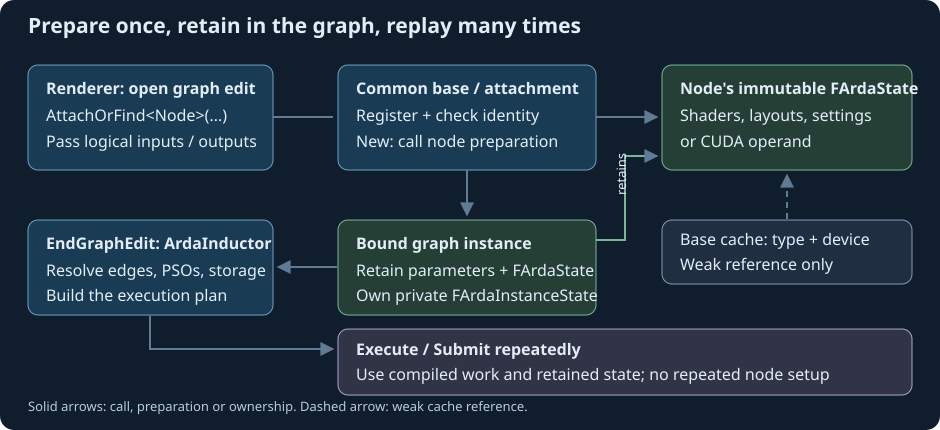

Persistent dependency graphs
Renderer quick guide
Keep graph configuration persistent while feeding per-frame inputs.
Learning objectives
Attach self-contained node classes, cache a graph per acquired swap-chain image, feed dynamic uniforms safely and use automatic pipeline slots. Start with edit transactions and parameter snapshots; the pipeline-state-object glossary entry explains what the compiler creates.
Nodes own device setup
The renderer includes node classes and attaches them inside a graph edit. Each class owns its shader registration, parameter metadata, layouts, fixed pipeline configuration and any CUDA operand. It derives from the common node template, usually through a domain specialization. The base implements registration, attachment and preparation lifetime. The include-only example umbrellas need no initialization. The attachment API checks this inheritance and routes through the base. ArdaInductor creates and caches PSOs at compilation.
Canonical identity is checked before setup: matching reattachment returns the existing instance; a name with different semantics fails. New instances invoke their preparation hooks. The base reuses live immutable state through a weak cache keyed by node type and device, while graph parameters retain strong references. Upload nodes do not initialize graphics nodes. Mutable binding sets and ray shader tables belong to separate instance state. Ordinary graph execution repeats only recording and submission. Device setup is fixed by node type/device; parameter-dependent setup belongs to the instance, and dynamic input bytes follow their own synchronization contract.

Register a library of graphics and CUDA nodes
Registration makes an operation discoverable in the global library; attachment creates a named instance with resources and parameters in a graph. These have different lifetimes. Inherited Register() stores metadata and callbacks without creating a device, loading shaders, creating layouts or launching a kernel. It is useful for menus or a future graph frontend that enumerates registered names before a graph exists. A renderer that already knows its node classes can skip explicit registration and call AttachOrFind<Node>; the base registers automatically.
The following are complete registration/composition helper definitions using existing example classes. Put each recipe in its named example target so the matching node implementations, shader mappings and assets are linked. A header include alone does not supply their implementations. Call registration at library startup if desired; call attachment only inside an existing graph edit, then check EndGraphEdit() and execute or submit. These composition helpers deliberately leave that edit open: a failure may follow earlier successful attachments, so repair or cancel the transaction. They do not allocate or import the caller's logical resources.
Compute, indexed raster and fullscreen graphics
In ARDGExample, the generate node derives from the compute base, while indexed drawing and fullscreen overlay derive from the graphics base. The registered names are example.terrain.generate, example.terrain.draw and example.terrain.overlay. All use native recording hooks. Generate describes a compute pipeline; draw supplies vertex/pixel shaders and vertex layout; overlay supplies its own fullscreen vertex/pixel shaders. Each class prepares those details internally, and ArdaInductor creates their independent PSOs.
Terrain: register three operation types and attach draw plus overlay
#include "Nodes/ArdaTerrainGenerateNode.h"
#include "Nodes/ArdaTerrainDrawNode.h"
#include "Nodes/ArdaTerrainOverlayNode.h"
arda::FArdaRHIStatus RegisterTerrainLibrary()
{
using namespace arda;
if (auto S = FArdaTerrainGenerateNode::Register(); !S) return S;
if (auto S = FArdaTerrainDrawNode::Register(); !S) return S;
return FArdaTerrainOverlayNode::Register();
}
arda::FArdaRHIStatus AttachTerrainRasterNodes(
arda::FArdaDependencyGraph& Graph,
const arda::FArdaTerrainDrawParameters& Draw,
const arda::FArdaTerrainOverlayParameters& Overlay)
{
using namespace arda;
// Graph is already editing; resources and upstream producers are declared.
if (Overlay.mSource != Draw.mColor)
return FArdaRHIStatus::Error(EArdaRHIResult::InvalidArgument,
"Overlay must consume the draw output.");
auto Compose = Graph.AttachOrFind<FArdaTerrainOverlayNode>("overlay", Overlay);
if (!Compose) return Compose.mStatus;
auto Raster = Graph.AttachOrFind<FArdaTerrainDrawNode>("draw", Draw);
return Raster.mStatus;
}
Before this helper, fill Draw with heightmap, vertex/index, camera, color and depth handles plus the target extent. Set Overlay.mSource = Draw.mColor, set its color handle to the acquired backbuffer, and use the same extent. Declare producers for owned heightmap, geometry and camera inputs, or import initialized resources with valid entry states. Draw writes scene color; overlay consumes it. The consumer attaches first, but the resource edge enforces draw before overlay. The full terrain chain also shows the separate generation, erosion, triangulation and upload operations.
Acceleration-structure build and ray dispatch
Compile this recipe in CornellBox. Its TLAS build, ray dispatch and accumulation are independently registered native operations. The trace class uses the compute node base but declares a RayTracing pipeline request and acceleration-structure reads. Execution domain and pipeline family are separate: the current compiler keeps ray-tracing work on the graphics queue. It creates ray-generation, miss and hit-group PSO state from the trace node's contributions; the node privately maintains its shader table.
Cornell: register the ray library and attach the TLAS-to-trace dependency
#include "Nodes/ArdaCornellBuildTlasNode.h"
#include "Nodes/ArdaCornellTraceNode.h"
#include "Nodes/ArdaCornellAccumulateNode.h"
arda::FArdaRHIStatus RegisterCornellRayLibrary()
{
using namespace arda;
if (auto S = FArdaCornellBuildTlasNode::Register(); !S) return S;
if (auto S = FArdaCornellTraceNode::Register(); !S) return S;
return FArdaCornellAccumulateNode::Register();
}
arda::FArdaRHIStatus AttachCornellRayNodes(
arda::FArdaDependencyGraph& Graph,
const arda::FArdaCornellNodeParameters& Build,
const arda::FArdaCornellNodeParameters& Trace)
{
using namespace arda;
// Build reads BLAS at slot 0 and writes TLAS at slot 1.
// Trace reads that TLAS at slot 0 and the same BLAS at slot 6.
if (Build.mResources[1] != Trace.mResources[0] ||
Build.mResources[0] != Trace.mResources[6])
return FArdaRHIStatus::Error(EArdaRHIResult::InvalidArgument,
"Trace must consume the built scene.");
auto Rays = Graph.AttachOrFind<FArdaCornellTraceNode>("trace", Trace);
if (!Rays) return Rays.mStatus;
auto Tlas = Graph.AttachOrFind<FArdaCornellBuildTlasNode>("tlas", Build);
return Tlas.mStatus;
}
Import the existing BLAS and unbuilt TLAS first. Build.mResources uses slot 0 for BLAS and slot 1 for TLAS. Trace.mResources uses slots 0–6 for TLAS, vertices, indices, materials, sample-radiance output, frame constants and BLAS respectively. Set width, height, samples and each operation's retained workspace estimate, and provide initialized imports or producers for all remaining inputs. Attach accumulation/presentation or mark the radiance output so tracing remains observable. The TLAS build declares a side effect and runs on every graph execution, including frames after sampling ends. Ray-tracing capability is required when preparing/compiling these nodes; registration alone is not a device-support probe. See ray pipeline contributions and the frame lifecycle.
A mixed HLSL and CUDA library
Compile this recipe in PixelSort, which already links its compiled CUDA kernels and node implementations. The upload is a copy-domain node, noise is native compute, radix sort uses the CUDA base, and presentation is graphics. Explicit registration remains device-independent even for CUDA. Attachment prepares the operand and reports unsupported devices; the CUDA execution hook appends to the compiler-owned sequence.
PixelSort: register the library, then attach consumers before producers
#include "Nodes/ArdaPixelSortUploadFrameNode.h"
#include "Nodes/ArdaPixelSortNoiseNode.h"
#include "Nodes/ArdaPixelSortSortNode.h"
#include "Nodes/ArdaPixelSortPresentNode.h"
arda::FArdaRHIStatus RegisterPixelSortLibrary()
{
using namespace arda;
if (auto S = FArdaPixelSortUploadFrameNode::Register(); !S) return S;
if (auto S = FArdaPixelSortNoiseNode::Register(); !S) return S;
if (auto S = FArdaPixelSortSortNode::Register(); !S) return S;
return FArdaPixelSortPresentNode::Register();
}
arda::FArdaRHIStatus AttachPixelSortNodes(
arda::FArdaDependencyGraph& Graph,
const arda::FArdaPixelSortNodeParameters& P)
{
using namespace arda;
// One shared frame-input object and four logical resource handles.
auto Present = Graph.AttachOrFind<FArdaPixelSortPresentNode>("present", P);
if (!Present) return Present.mStatus;
auto Sort = Graph.AttachOrFind<FArdaPixelSortSortNode>("sort", P);
if (!Sort) return Sort.mStatus;
auto Noise = Graph.AttachOrFind<FArdaPixelSortNoiseNode>("noise", P);
if (!Noise) return Noise.mStatus;
auto Upload = Graph.AttachOrFind<FArdaPixelSortUploadFrameNode>("upload", P);
return Upload.mStatus;
}
Fill P.mConstants with the frame constant-buffer handle, P.mNoise/P.mSorted with distinct CUDA-shareable RGBA8UInt texture handles, and P.mColor with the acquired backbuffer. Noise and sorted textures must match mWidth/mHeight, use one mip/layer and one sample, and be created with mbCudaInterop = true. Keep the shared P.mInput alive and update it before recording. The resolved order is upload → HLSL noise → CUDA radix sort → graphics presentation. Consecutive CUDA nodes with compatible dependencies can coalesce into one sequence; authoring separate nodes does not require one graphics handoff per kernel. CUDA graphics-integration support depends on backend and driver, so qualification and fallback remain relevant.
Author and register another CUDA node
This complete class reuses PixelSort's precompiled operand while defining its own registry identity and immutable logical parameters. Compile it in the PixelSort target, including its existing host operand implementation and kernel library. The public source/output handles follow the same texture requirements as above. The class body is kept together here for readability; a library should put its declaration in Public/Nodes and its state and method definitions in Private/Nodes.
Custom CUDA node: metadata, key, validation, preparation, accesses and sequence recording
#include "ArdaDependencyNode.h"
#include "Nodes/ArdaPixelSortOperand.h"
namespace arda
{
struct FArdaTutorialSortParameters
{
FArdaDependencyResourceHandle mSource;
FArdaDependencyResourceHandle mOutput;
uint32_t mWidth = 0;
uint32_t mHeight = 0;
uint32_t mChannel = 0;
uint32_t mThreshold = 48;
};
class FArdaTutorialSortNode final
: public TArdaCudaDependencyNode<FArdaTutorialSortNode, FArdaTutorialSortParameters>
{
public:
struct FState
{
FArdaPixelSortOperand mOperand;
explicit FState(FArdaRHIDeviceRef Device) : mOperand(Device) {}
};
static FArdaDependencyNodeMetadata GetMetadata()
{
return {"tutorial.cuda-radix", 1};
}
static eastl::string GetCanonicalKey(const FParameters& P)
{
eastl::string Key;
for (auto H : {P.mSource, P.mOutput})
{
for (uint64_t V : {H.mGraph, uint64_t(H.mIndex), H.mGeneration})
Key.append(reinterpret_cast<const char*>(&V), sizeof(V));
}
for (uint32_t V : {P.mWidth, P.mHeight, P.mChannel, P.mThreshold})
Key.append(reinterpret_cast<const char*>(&V), sizeof(V));
return Key;
}
static FArdaRHIStatus Validate(const FParameters& P)
{
if (!P.mWidth || !P.mHeight || P.mChannel > 2 || P.mThreshold > 255 ||
P.mSource == P.mOutput)
return FArdaRHIStatus::Error(EArdaRHIResult::InvalidArgument,
"Invalid radix-sort inputs.");
return {};
}
static TArdaRHIResult<eastl::shared_ptr<const FState>> Prepare(FArdaRHIDeviceRef Device)
{
if (!Device)
return {{}, FArdaRHIStatus::Error(EArdaRHIResult::InvalidState,
"CUDA preparation requires a device.")};
auto State = eastl::make_shared<FState>(Device);
if (auto S = State->mOperand.GetOperandSupport(); !S) return {{}, S};
return {eastl::move(State), {}};
}
static FArdaDependencyNodeDesc Describe(const FParameters& P, const FState&)
{
FArdaDependencyNodeDesc D;
D.mAccesses = {
{P.mSource, EArdaDependencyAccess::Read, EArdaRHIResourceState::UnorderedAccess},
{P.mOutput, EArdaDependencyAccess::Write, EArdaRHIResourceState::UnorderedAccess}};
return D;
}
static FArdaRHIStatus PrepareCuda(FArdaDependencyExecutionContext& C,
const FParameters& P, const FState& State, FInstanceState&, FArdaCudaSequence& Sequence)
{
FArdaPixelSortParameters Host;
Host.mInput.mTexture = C.GetTexture(P.mSource);
Host.mOutput.mTexture = C.GetTexture(P.mOutput);
Host.mWidth = P.mWidth;
Host.mHeight = P.mHeight;
Host.mChannel = P.mChannel;
Host.mThreshold = P.mThreshold;
return Sequence.Add(State.mOperand, Host);
}
};
FArdaRHIStatus RegisterTutorialCudaLibrary()
{
return FArdaTutorialSortNode::Register();
}
TArdaRHIResult<FArdaGraphNodeHandle> AttachTutorialSort(
FArdaDependencyGraph& Graph, FArdaTutorialSortParameters Parameters)
{
return Graph.AttachOrFind<FArdaTutorialSortNode>("tutorial-sort", Parameters);
}
} // namespace arda
Call RegisterTutorialCudaLibrary() only when explicit discovery is useful. During an edit, pass initialized/imported or produced source and distinct output handles to AttachTutorialSort. Then add a consumer or mark the output, end the edit and submit. This version freezes channel and threshold in its canonical key; changing them requires replacement during an edit, including reattaching consumers removed with the old producer. It intentionally has no native Record hook. An adapter using cuBLAS/cuDNN follows the same CUDA hook: construct a supported external-call operand in its private state, declare every resource and workspace, and append it to the supplied sequence. External-call operands documents library handle/stream ownership and opt-in capture; registration cannot infer hidden library accesses.
Checkpoint: registering this class twice should preserve its definition; attaching the same name and parameters twice should preserve its instance without preparing it again. Registering a different class or revision under the same name fails. Use Node::GetMetadata().mName with registry lookup rather than repeating strings. If a tool uses the named-definition attachment path, it must explicitly register the definition first and pass its public parameter type. A frozen definition name is not a device identifier, and no renderer-side shader/layout initialization is required.
Cache per swap-chain image
After AcquireFrame(), find the graph for that color texture. On first use, begin an edit, import color, create depth and intermediates, attach nodes and end the edit. Compile only after that image has been acquired: ArdaInductor snapshots its current uniform entry state, which may differ from the creation descriptor. Replay on later frames with the same entry state and graphics-queue ownership. Release caches before Resize() so old backbuffers can be released.
Dynamic input contract
Terrain retains a CPU camera/time object and updates it before synchronous execution. Only upload callbacks read it; those bytes do not change dependencies, shapes or pipelines. Arbitrary pointers are not deep-copied. Concurrent submissions require separate snapshots or explicit synchronization.
Terrain operation sequence
Each operation has its own typed parameters and registered node: settings upload, settings copy, camera upload, heightmap generation, erosion, triangulation, drawing, and overlay composition. Generation writes a raw heightmap; erosion reads it and writes a separate eroded value. Triangulation produces vertex/index values. Drawing consumes geometry, heightmap and camera, writes scene color, and the overlay samples that color to produce the back buffer. The renderer attaches consumers before producers; EndGraphEdit() invokes ArdaInductor to resolve resource edges, transitions, independent pipelines, queues and intermediate storage. Every dispatch or draw is visible to the compiler. Separate logical outputs preserve the one-writer rule; their transient textures participate in memory planning and can require more storage than a combined in-place operation. Two separate first-frame readback nodes validate geometry, then are removed in an edit. Only dynamic CPU input values change on ordinary frames; the compiled graph is reused.
Inside an open edit with the three resources already declared, composition is ordinary typed operation attachment:
auto Generate = Graph.AttachOrFind<FArdaTerrainGenerateNode>(
"Generate", {Settings, RawHeightmap});
if (!Generate) return Generate.mStatus;
auto Erode = Graph.AttachOrFind<FArdaTerrainErodeNode>(
"Erode", {RawHeightmap, Heightmap});
if (!Erode) return Erode.mStatus;The renderer then checks EndGraphEdit() and submits the graph. Erode may be attached before Generate: its read of RawHeightmap determines the edge. The Source/ArdaTests/Examples/ARDGExample/Private/ArdaTerrainRenderer.cpp renderer includes resource declarations and error handling. Attachment outside an edit returns InvalidState before node setup. A setup failure leaves the edit open; repair the cause and retry or cancel the edit.
Complete terrain compute composition with resource declarations
Compile this function in the terrain example target, which links the three node implementations and configures their shader source mapping. Pass an initialized graphics-capable device. This small graph generates and erodes three heightmaps without a window or camera; it marks the final value as output to retain the compute chain. It owns and releases its resources when the function returns. In a renderer, keep the graph and output handle as members for further consumers and later frames.
#include "Nodes/ArdaTerrainUploadSettingsNode.h"
#include "Nodes/ArdaTerrainGenerateNode.h"
#include "Nodes/ArdaTerrainErodeNode.h"
arda::FArdaRHIStatus RunTerrainCompute(arda::FArdaRHIDeviceRef Device)
{
using namespace arda;
FArdaDependencyGraph Graph(Device);
if (auto S = Graph.BeginGraphEdit(); !S) return S;
FArdaRHIBufferDesc Buffer;
Buffer.mByteSize = sizeof(FArdaTerrainSettings);
Buffer.mStructureStride = sizeof(FArdaTerrainSettings);
Buffer.mUsage = EArdaRHIBufferUsage::Structured |
EArdaRHIBufferUsage::ShaderResource;
auto Settings = Graph.CreateBuffer("settings", Buffer);
if (!Settings) return Settings.mStatus;
FArdaRHITextureDesc Texture;
Texture.mWidth = ArdaTerrainHeightmapWidth;
Texture.mHeight = ArdaTerrainHeightmapHeight;
Texture.mFormat = EArdaRHIFormat::R32Float;
Texture.mUsage = EArdaRHITextureUsage::ShaderResource |
EArdaRHITextureUsage::UnorderedAccess;
auto Raw = Graph.CreateTexture("raw heightmap", Texture);
if (!Raw) return Raw.mStatus;
auto Heightmap = Graph.CreateTexture("eroded heightmap", Texture);
if (!Heightmap) return Heightmap.mStatus;
// Deliberately attach the consumer before its producers.
auto Erode = Graph.AttachOrFind<FArdaTerrainErodeNode>(
"Erode", {Raw.mValue, Heightmap.mValue});
if (!Erode) return Erode.mStatus;
auto Generate = Graph.AttachOrFind<FArdaTerrainGenerateNode>(
"Generate", {Settings.mValue, Raw.mValue});
if (!Generate) return Generate.mStatus;
auto Inputs = eastl::make_shared<FArdaTerrainFrameInputs>();
auto Upload = Graph.AttachOrFind<FArdaTerrainUploadSettingsNode>(
"Upload settings", {Settings.mValue, Inputs});
if (!Upload) return Upload.mStatus;
if (auto S = Graph.MarkOutput(Heightmap.mValue); !S) return S;
if (auto S = Graph.EndGraphEdit(); !S) return S;
for (uint32_t Frame = 0; Frame != 3; ++Frame)
{
Inputs->mSettings.mTime = float(Frame) / 60.f;
auto Run = Graph.Execute();
if (!Run.mStatus) return Run.mStatus;
}
return {};
}The upload writes a device buffer through its node callback. Compilation orders upload, generate and erode from resource accesses. Each successful synchronous execution finishes before the next change to the retained input object. The full renderer adds the geometry, camera, draw, overlay and diagnostic readback branches shown below.

Submit and present
Call PrepareSubmit(), execute the cached graph, check status and present. Execute() waits for this frame. Submit() and tickets allow overlap when presentation and input lifetimes permit it. Shared imports and persistent storage conservatively order frames.
Other pipeline families
Meshlet, ray-tracing and work-graph requests use the same model where supported. Declare acceleration structures, scratch and indirect arguments. Cornell retains static BLAS/geometry and executes a full TLAS build in every frame graph, including frames after sampling ends. Ray reads depend on that TLAS write; replaying the graph repeats the build while reusing its storage. The pipeline guide covers exports, hit groups and program settings.
Chapter summary
Compile after image acquisition, preserve the captured entry state during replay, and release backbuffer graph caches before resize.
Source and API
Read the developer guide, pipeline guide, public API reference and graph declarations.